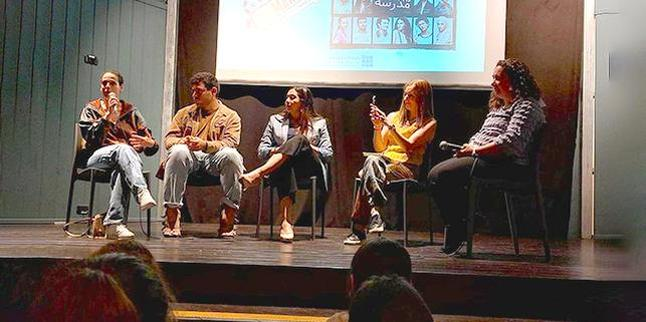

צילום: לירז מענית
סינמנדל (CINEMANDEL) - מועדון הקולנוע החברתי לבוגרות ולבוגרי כלל תוכניות קרן מנדל-ישראל המתגוררים בצפון, הוא יוזמה משותפת של
לירז מענית וקטף מוראד סלאמה ממרכז מנדל למנהיגות בצפון. מטרת סינמנדל היא לייצר מפגשי תרבות ורוח שבבסיסם סרטים, מרחב שבו יכולים הבוגרים והבוגרות להרגיש את רוח מנדל, הפעם מזווית חווייתית.
הרעיון יצא לפועל בתחילת שנת הלימודים כפיילוט של חמישה מפגשים לאורך השנה. בחירת הסרטים הייתה מוקפדת מאוד: כל הסרטים הביאו עמם זיקה לעולמות הרוח המשקפים את ערכי קרן מנדל, של מנהיגות וסובלנות. נוסף על כך, היה להם קשר לצפון, והם ייצגו את מארג הזהויות הצפוני הרחב.
ההחלטה להתמקד דווקא בעולם הקולנוע נבעה מכך שזהו מדיום שמספר סיפור, אבל כזה שרואים. בכך הוא מפגיש אותנו עם האחר, הדומה והשונה מאיתנו, אך גם עם עצמנו, ועם מנעד הרגשות שבתוכנו, המוחצנים והמודחקים. סרטים מזמינים אותנו למפגש מוגן עם זהויות ודמויות שאין אנו נתקלים בהן ביום יום, בלי להציב אותנו בעמדת חשיפה או התגוננות, ובכך ממטבים את חוויית ההקשבה ומאפשרים לנו להתבונן בסיפור האישי עצמו.
 צילום: לירז מענית
צילום: לירז מענית
קטף מוראד סלאמה, מובילת תהליכי הפיתוח הפדגוגי במרכז מנדל למנהיגות בצפון והמלווה האקדמית של התוכנית למנהיגות אזורית בצפון, מגיעה מתחום הקולנוע, ולירז מענית, מובילת קהילת הבוגרים של המרכז, הבינו שצפייה בסרט בעל אמירה משמעותית, בשילוב רב-שיח הממחיש ומשקף את הפנים והקולות של מגוון הבוגרות והבוגרים, הם הזדמנות יוצאת דופן לאפשר מקום בטוח להביע תחושות ודעות, לצד מפגש חברתי מחבר. זו הייתה גם הזדמנות לחבר בין כלל בוגרי היחידות והתוכניות השונות של הקרן – החיים, פועלים ומשפיעים על מרחב הצפון.
הפרויקט יצא לדרך בסוף ינואר עם הקרנת הסרט "סינמה סבאיא" שעוסק בקבוצת נשים יהודיות וערביות שנפגשות בסדנה ללימוד צילום וידאו באזור נתניה-ואדי עארה. לאחר הצפייה בסרט התקיימה שיחה עם הבימאית, אורית פוקס רותם.
בפברואר הוקרן סרט הדרמה "יותר ממה שמגיע לי" בנוכחותו של הבימאי,
פיני טבגר, שגם כתב את עלילת הסרט בהתבסס על חייו בקרית אתא לאם יחידנית. הסרט עוסק בעלייה מאוקראינה ומנכיח סוגיה אקטואלית ובוערת במציאות הישראלית.
המפגש השלישי היה מיוחד מאוד. הוא התקיים במרץ, במהלך חודש הרמדאן, ונערכה בו ארוחת אפטאר חגיגית לשבירת הצום. ד"ר אוהד אופז סיפר על תוכנית ייחודית של מכללת אורנים – דיאלוג דרך קולנוע, שבמסגרתה נפגשים אנשי חינוך לסדנת דיאלוג ויצירה משותפת של סרטי קולנוע קצרים. בהמשך צפו המשתתפים בסרט "מישהו מואזין?" וניהלו דיון עם יוצריו, עאוני מתאני ואלכס רויטמן.
 צילום: לירז מענית
צילום: לירז מענית
המפגש הרביעי באמצע מאי היה שונה מהאחרים ושמח מאוד, מפני שהוזמנו אליו לא רק הבוגרות והבוגרים אלא גם ילדיהם. הפעם הוקרנו שני פרקים מסדרת הנוער המצליחה "מדרסה", שהופקה בתאגיד השידור, ולשיח הצטרפו שחקנים ושחקניות מהסדרה.
המפגש החמישי והאחרון התקיים באמצע יוני וכלל צפייה בסרט הדוקומנטרי "אח שלי גיבור" המספר על חבורת צעירים ישראלים עם תסמונת דאון שיוצאים עם אחיהם ואחיותיהם לטיול תרמילאים בצפון הודו. בתום ההקרנה נערך שיח עם יוצר הסרט, יונתן ניר.
לכל הסרטים הגיעו עשרות רבות של בוגרים (בממוצע כ-80 איש לכל הקרנה), ממגוון יחידות ותוכניות הקרן; לאחר כל מפגש התקבלו תגובות רבות, שציינו את החשיבות שלהם לבוגרות ולבוגרים, והוכיחו עד כמה הם צמאים להמשך קשר משמעותי עם קרן מנדל: "היה מרומם נפש, וכרגיל, כמו תמיד, מעורר מחשבות, מייצר קנאת סופרים חיובית, והכי שימח אותי, שלשעתיים פלוס הצלחנו להתחבר יחד, לדבר, להקשיב ולשתף בסוגיות חברתיות, קהילתיות, אישיות, כמו שעשינו פעם. פשוט הנאה צרופה", כתב אחד מהם.
{kind=link}